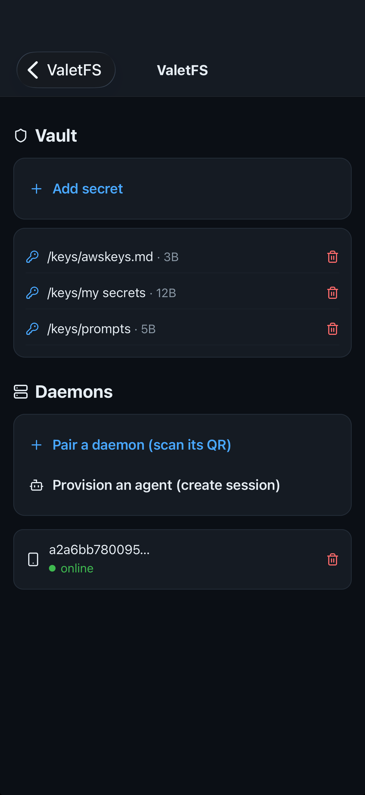
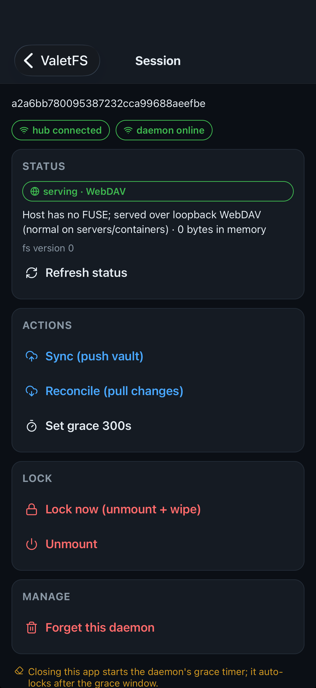
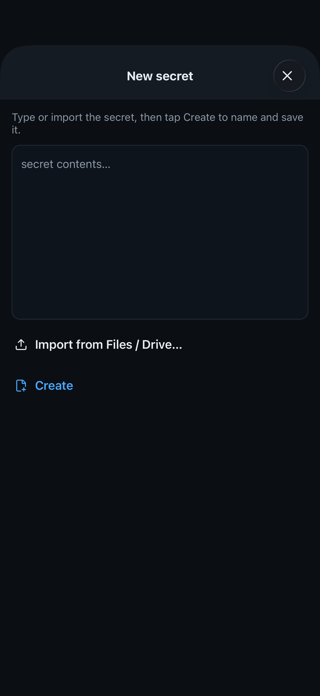
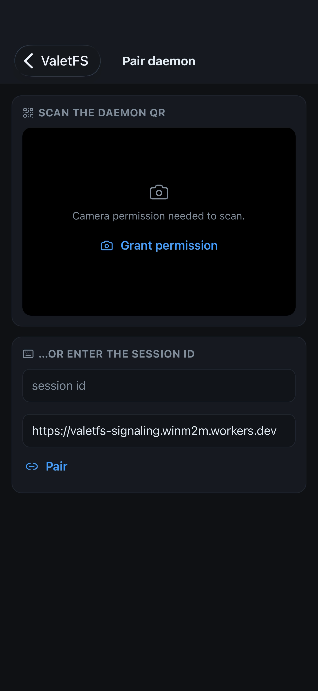

ValetFS keeps a developer's API keys on their iPhone and lends them to a tool or an AI agent on their computer — into memory, never onto disk — and takes them back when the work is done.
| App | ValetFS — Lend API keys to AI agents |
|---|---|
| Platform | iPhone, iOS. Companion daemon runs on macOS and Linux |
| Category | Developer Tools |
| Price | Free. One-time in-app unlock "ValetFS Pro" at US$8.99 / ₩14,000. Not a subscription |
| Developer | Youngjune Kwon — one person |
| Languages | English, Korean, Japanese, Simplified Chinese, Spanish, French, Arabic |
| Licence | Daemon, CLI and relay protocol are open source under MIT. The iOS app is not |
| Accounts | None. No sign-up, no login, no analytics SDK, no advertising |
| App Store | apps.apple.com/app/id6804526734 |
| Source | github.com/WinM2M/valet-fs |
| Contact | yjkwon@winm2m.com |
Handing an API key to a build tool or an AI coding agent normally means writing it into a dotfile, an environment variable or a config directory, where it stays readable by everything on that machine long after the job is finished. ValetFS inverts that. The keys live on the phone, in the iOS Keychain behind Face ID. A small open-source daemon on the computer borrows one into memory when it is needed, and closing the app starts a grace timer after which the daemon unmounts and wipes itself.
Secrets are sealed on the phone for one specific daemon — protocol v2 is
Noise_IK_25519_ChaChaPoly_SHA256 — so the relay that carries them sees only
ciphertext, and the developer cannot read them either.
Stated plainly so nobody has to discover it: while a secret is in use it still enters the requesting process's memory, and nothing here closes that window. What changes is that no durable copy is left on the machine, and the authority to hand a key over again lives on a device the compromised machine cannot reach. ValetFS also does not stop an agent from misusing a key it was legitimately given inside an approved window.




Download the app icon — a phone frame enclosing a keyhole. The key lives in your phone.
ValetFS is a two-part tool for developers. An open-source daemon runs on the computer; an iPhone app holds the secrets. When a build tool or an AI agent needs an API key, the app lends it into the computer's memory, never onto its disk, and takes it back when the session ends. There is no account and no login, and every security function is free. ValetFS is made by Youngjune Kwon, an independent developer.
Where workload identity federation can't go — why this exists: federated identity removed static API keys from cloud workloads this year, but a laptop has no identity to federate, so the advice for local agents is still to export the key in a shell profile.
{kind=link}
{kind=link}
{kind=link}
{kind=link}
{kind=link}